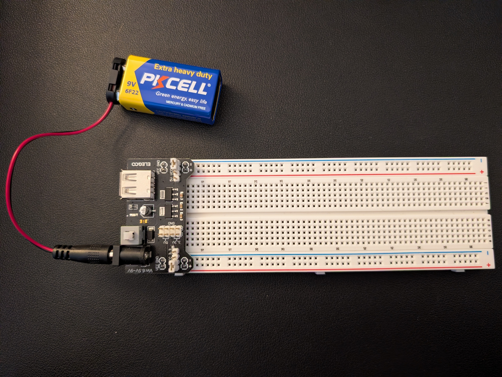
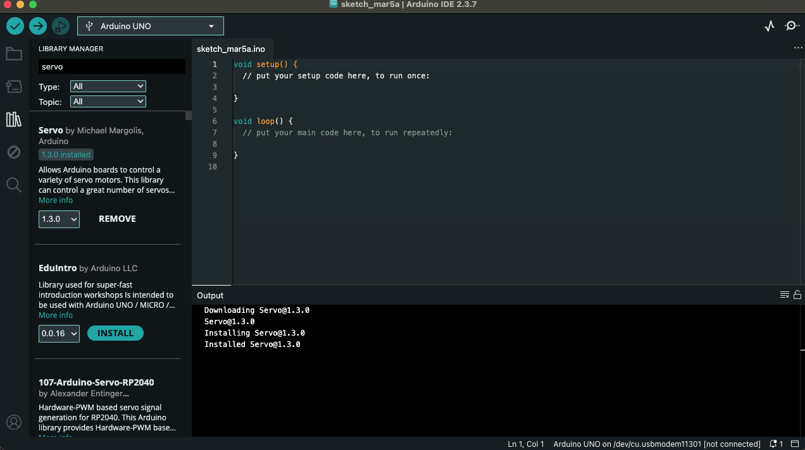
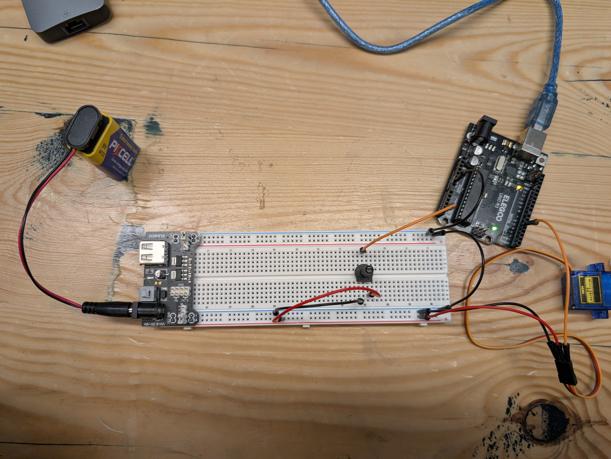
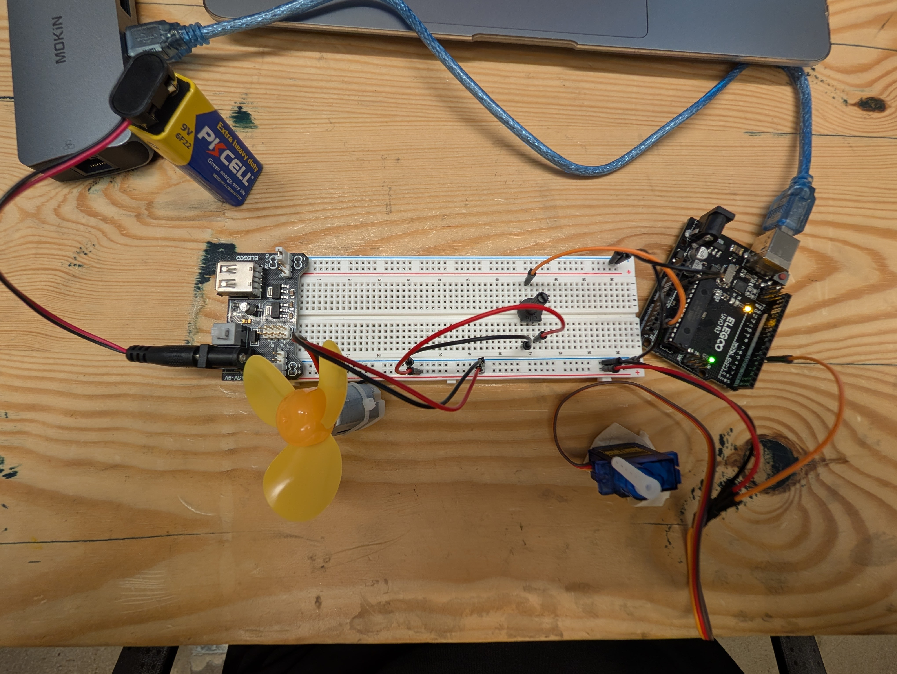
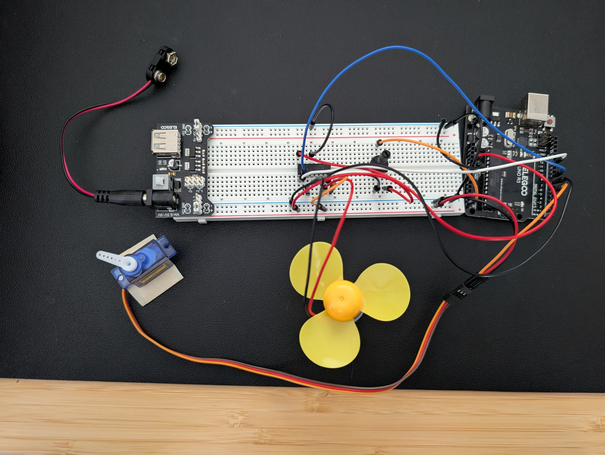
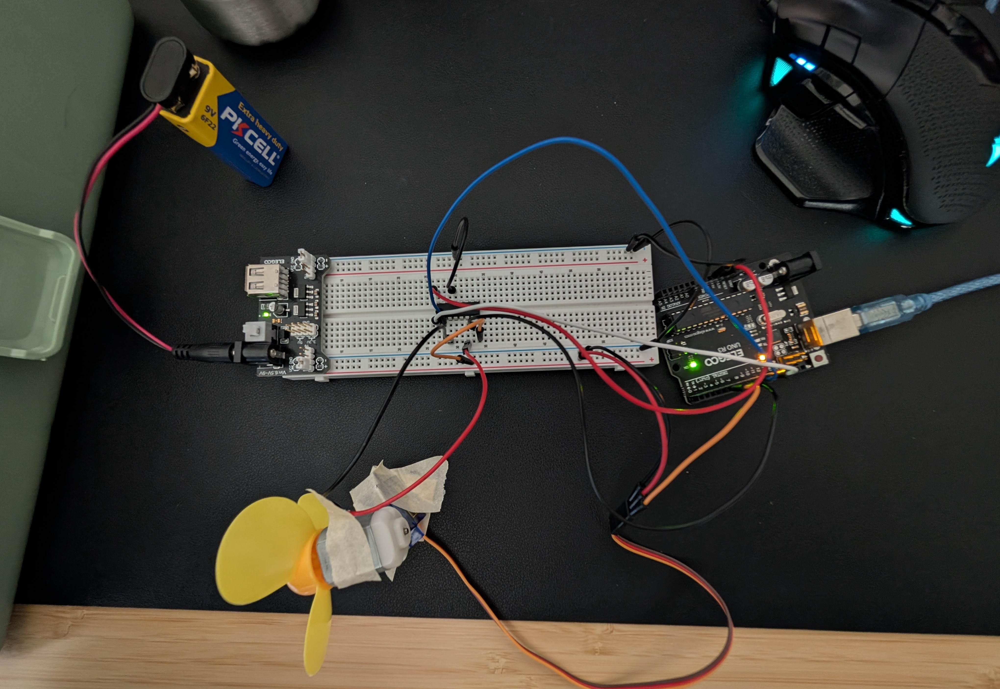

Lab 6: “Fine Motor Control”
Materials Used
- Arduino (Elegoo) Uno R3 Controller Board
- USB Cable
- USB Adapter
- Power Supply Module
- Breadboard Jumper Wire
- Resistors
- Servo Motor SG90
- Multimeter
- DC Motor and Fan Blade
- L293D IC
- Button
- Potentiometer
- 9V Battery with Snap-on Connector
PART 0: Setting Up Power
Connecting the power supply module so one of the power rails on the breadboard is 5V and the other is 3.3V!
The bottom power rail is 5V and the top power rail is 3.3V.

PART 1: Wiring the Servo
Which pins allow PWM?
The pins with a "~" before the number are PWM pins. For example, pins 5 and 6 are PWM pins. Here is how I connected the servo to the circuit using a PWM pin.

Installed Servo.h Library

Turning Servo
I uploaded the provided code from the lab description to my Arduino and made the Servo turn!
PART 2: Controlling The Servo
Connecting the Potentiometer
Here is how I connected the potentiometer to the circuit.

"Which Arduino function can we use to convert the analog potentiometer reading into an angle value that can be sent to the servo for this behavior?"
I used the map() function in order to change the potentiometer reading (between 0 and 1023) to the range of degrees the servo can turn (between 0 and 180).
Potentiometer Influencing Servo Speed
Part 3: DC Motor and Motor Driver
DC Motor Running
I connected the DC Motor to my circuit and here's how!

Complete Motor Circuit
Here is my circuit with the L293D IC! I used this motor driver in order to control the DC motor.

Specific Motor Movement
The motor turns forward at full speed for two seconds, stops for one second, turns backward at full speed for two seconds, stops for one second, then goes back to the beginning.
rampUp() & rampDown()
I wrote this code so that the motor starts from 0 speed and increases speed ("ramping up") to full speed, then slowly decreases speed ("ramping down") until the speed is at 0. Then repeats!
Part 4: Table-Top Fan
Connecting the DC Motor to the Servo
Here is how I attatched the DC motor to the Servo, and what my circuit looks like!


"What will be the PWM value appropriate for 70% speed?"
179 is about 70% of 255, so I used that value to set the fan speed to 70%.